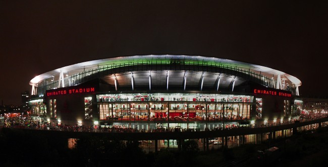

f Arsenal's relocation from Woolwich to Highbury gave the Club a chance to climb the football ladder, the move to Emirates Stadium will help to keep it at the top.It's hard to overstate the sheer magnitude of the project which took Arsenal from its home of 93 years to a state-of-the-art venue just down the road in 2006. The Club not only constructed a stadium, it regenerated the local community.
Arsenal announced its proposals to move to a new stadium, situated at Ashburton Grove, in November 1999. Planning consent was secured in May 2002 and construction work began at the site in February 2004 after funding was completed.
The imposing North and South Bridges were in place within six months and, in October 2004, the venue was officially named Emirates Stadium. The Topping-Out ceremony took place in August 2005 and, a year later, the stadium opened for business.
Its first game was Dennis Bergkamp's testimonial on July 22, 2006. Few would argue that the Emirates has not lived up to expectations. It is acknowledged as one of the finest football stadiums in the world and was sold out for every first-team game in its opening season.
As the then Managing Director Keith Edelman explained before the move, the financial benefits of the Club's historic move will allow Arsenal to sustain their competitiveness at the highest level. "Our aim is to be a leading European club and, once we get into the new stadium, we will be in that position. It is very income-generous to us," he said."When we move to Emirates Stadium we will have higher percentage of our income from gates. Very close to 50 per cent of our revenue will be gate income at Emirates Stadium, compared to around 30 per cent at Highbury.
"The revenue from executive boxes and Club Level alone will be almost equivalent to the [whole] income at Highbury. So we'll be getting that and the revenue from 51,000 extra people."Arsenal said goodbye to Highbury on May 7, 2006, beating Wigan 4-2 to pip Tottenham to a Champions League spot before an emotional closing ceremony brought the curtain down on 93 years of history. Highbury will always be Arsenal's spiritual home, but Emirates Stadium is the key to the future.
Do you prefer Highbury or the Emirates